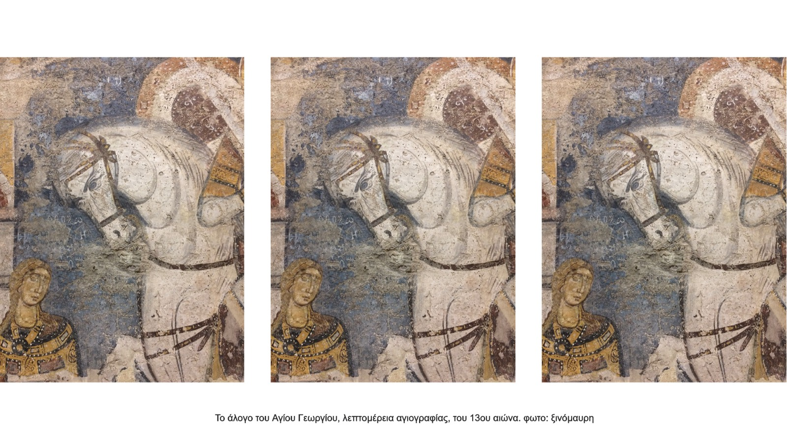
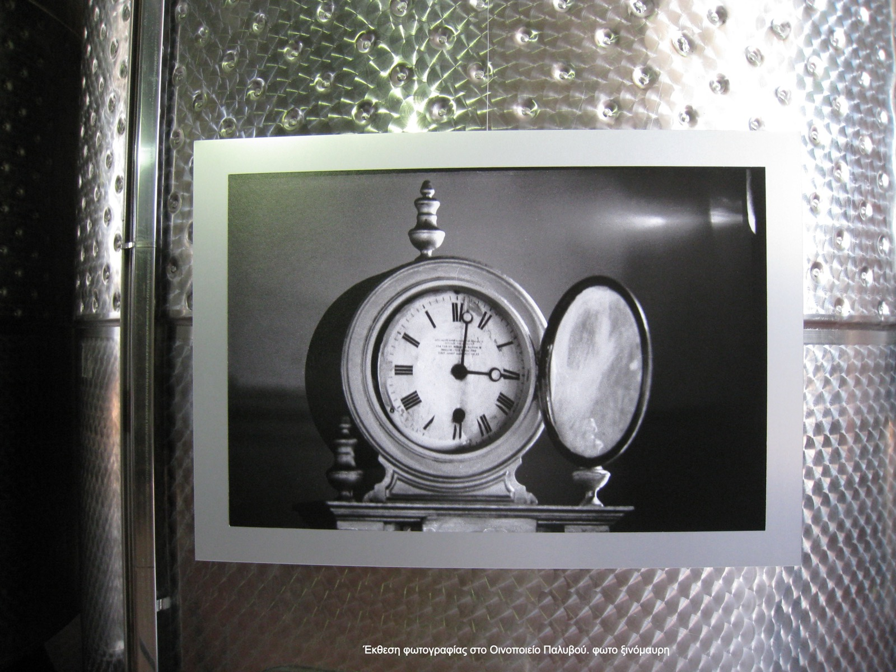

Ανήμερα του αγιωργίτικου
Το κρασί της Νεμέας
Αν η πρώτη μου ανάρτηση για το κρασί, ως ξινόμαυρη, ήταν αφιερωμένη δικαιωματικά στο ξινόμαυρο, η δεύτερη ανάρτηση λογικά πρέπει να είναι για το αγιωργίτικο και την πατρίδα του την Νεμέα. Σημειώνω τα 10 βασικά στοιχεία που αφορούν αυτή τη σπουδαία ποικιλία της Νότιας Ελλάδας.

1. Ο τόπος
Μία από τις τέσσερις ποικιλίες πρεσβευτές του ελληνικού κρασιού. Μαζί με το ξινόμαυρο, το ασύρτικο και το μοσχοφίλερο αποτελούν την καρδιά της οινικής μας περιουσίας.
Το αγιωργίτικο κυριαρχεί στη Νεμέα, και ήδη από το 1971 έχουμε τη θέσπιση της Προστατευόμενης Ονομασίας Προέλευσης ΠΟΠ Νεμέας. Μάλιστα ο ΠΟΠ Νεμέα είναι ο μόνος ελληνικός οίνος ΠΟΠ που η ζώνη του εκτείνεται σε δύο περιοχές. Στην περιοχή γύρω από τη Νεμέα, αλλά και στα βορειοδυτικά του Νομού Κορινθίας, στις περιοχές Σικυώνας και Στυμφαλίας.
2. Το όνομα
Το παλιό όνομα του χωριού της Νεμέας ήταν Αϊ-Γιώργης, και διέθετε φυσικά και ομώνυμη εκκλησία, με τον Άγιο Γεώργιο να είναι ο πολιούχος του χωριού. Η ποικιλία που κυριαρχούσε στην περιοχή, εξαιρετικά σημαντική για την οικονομία της, πήρε σταδιακά το όνομα αγιωργίτικο. Προγενέστερα ονόματα, όχι σε τόσο συχνή χρήση πλέον είναι το Μαύρο Νεμέας, Μαυρούδι Νεμέας και Νεμεάτικο.
3. Ο μύθος
Κατ' αρχήν η Νεμέα ταυτίζεται με την Φλιασία, το μέρος που βασίλεψε ο Φλίας, ένας από τους γιούς του Διόνυσου, και τόπος όπου σύμφωνα με την παράδοση παραγόταν το βασιλικό κρασί που έπιναν οι Μυκηναίοι βασιλιάδες, μεταξύ αυτών και ο Αγαμέμνονας. Επίσης, σύμφωνα με το μύθο, το αγιωργίτικο ήταν το αίμα του Ηρακλή όταν σκότωσε το λιοντάρι της Νεμέας, ολοκληρώνοντας τον πρώτο του άθλο. Αυτός ο μύθος μας λέει αρκετά για την σημασία του κρασιού στην περιοχή, αλλά και για το βάθος χρόνου της καλλιέργειάς του.
4. Η βεντάλια
Το αγιωργίτικο παράγει κρασιά σ' ένα εξαιρετικό εύρος. Κατ' αρχήν δίνει κόκκινα ξηρά βαρελάτα κρασιά, αλλά και φρέσκα κρασιά δεξαμενής. Γενικά είναι μία ποικιλία που ενώ διαθέτει δυναμική παλαίωσης για πολλά χρόνια, δίνει εξαιρετικά αποτελέσματα και στα φρέσκα κρασιά. Κυρίως τις δύο τελευταίες δεκαετίες, από αγιωργίτικο έχουμε πολύ δημοφιλή ροζέ ξηρά ή ημίξηρα και τέλος εκπληκτικά επιδόρπια, γλυκά κρασιά, κυρίως από λιαστά σταφύλια.
5. Η ταυτότητα
Αν έπρεπε με μία λέξη να χαρακτηρίσουμε τα κρασιά της ποικιλίας αγιωργίτικο αυτή θα ήταν «βελούδινα». Το αγιωργίτικο παράγει κρασιά αρκετά βατά και ευκολόπιοτα. Διαθέτουν αξιοσημείωτη γλύκα και εκφράζονται αρωματικά και γευστικά μ' έναν πλούσιο και απαλό τρόπο. Οι τανίνες του είναι πιπεράτες ή γλυκές και συγκρινόμενες με άλλων περιοχών θα μπορούσαμε να πούμε ότι είναι πιο πολιτισμένες και φιλικές. Ακόμη και τα αγιωργίτικα που διαθέτουν υψηλές οξύτητες δεν θα μπορούσαμε να τα χαρακτηρίσουμε επιθετικά. Άρα το σύνολο μας κάνει κρασιά που αγαπιούνται εύκολα.

6. Η μύτη και το στόμα
Στα φρέσκα ερυθρά ή ροζέ κρασιά από αγιωργίτικο, συνήθως εντοπίζει κανείς γεύσεις και αρώματα από φρέσκα, ζουμερά, μικρά, κόκκινα φρούτα όπως κεράσι, βατόμουρο και φράουλα. Στις βαρελάτες Νεμέες, πρωταγωνιστούν αρώματα μαρμελάδας κόκκινων φρούτων, σοκολάτας, και συχνά εντοπίζονται νότες από μπαχαρικά, καπνό και καφέ. Στα γλυκά, επιδόρπια κρασιά από αγιωργίτικο, κυριαρχεί η σταφίδα, το αποξηραμένο δαμάσκηνο και η μόκα.
7. Ξενοκοιτάζοντας
Αν θέλαμε να κάνουμε έναν παραλληλισμό του αγιωργίτικου με μία διεθνή ποικιλία κρασιού, αυτή θα ήταν η ιταλική σαντζιοβέζε (Sangiovese) που χαρίζει τα περίφημα κρασιά κιάντι (Chianti). Η περιοχή Κιάντι βρίσκεται στην καρδιά της Τοσκάνης.
8. Ανοιχτές πόρτες
Μία άλλη παραλληλία με την Τοσκάνη, είναι η δύναμη της Νεμέας στον οινοτουρισμό. Μόλις μία ώρα από την Αθήνα, δίπλα στις Μυκήνες, στον δρόμο για την Επίδαυρο, μια γειτονιά με το Ναύπλιο, και μ' έναν εκπληκτικής ομορφιάς αρχαιολογικό χώρο, στην καρδιά της Νεμέας. Τα περισσότερα οινοποιεία της περιοχής είναι επισκέψιμα, με βατά ωράρια, μερακλίδικους χώρους γευσιγνωσίας και δυνατότητα να βιώσει κανείς κάτι από τη μαγεία του κρασιού. Αμπέλια, κελάρια, παραδοσιακά πατητήρια, πινελιές σύγχρονης αρχιτεκτονικής, γλέντια και συναυλίες στις αυλές των οινοποιείων, Μεγάλες Μέρες της Νεμέας. Όλα τα έχει ο αμπελοοινικός μπαξές της Νεμέας. Εξαιρετική μονοήμερη εκδρομή για μυημένους οινόφιλους, αρχάριους ή απλά λάτρεις της φύσης.
9. Το τοπίο του πολιτισμού
Ή ο πολιτισμός του τοπίου. Τα κρασιά της Νεμέας αλλά και η μαγεία της περιοχής είναι στενά συνδεδεμένα με έναν εκπληκτικό αρχαιολογικό χώρο που υπάρχει στην Αρχαία Νεμέα. Ο Ναός του Δίας, το στάδιο όπου διοργανωνόταν τα Νέμεα, ένα μικροσκοπικό αρχαιολογικό μουσείο που φιλοξενεί πανέμορφους θησαυρούς, κάποιους από αυτούς συνδεδεμένους με ιστορίες αρχαιοκαπηλίας, ιδανικές για κινηματογραφική ταινία. Και όλα αυτά σ' ένα τοπίο κατάφυτο με αμπελώνες και κυπαρίσσια.
10. Η νέα γενιά
Η άνοιξη της οινικής Πελοποννήσου ήρθε από μία γενιά οινοπαραγωγών, που οι περισσότεροι εξ αυτών κρατάνε ακόμη τα ηνία και είναι εξαιρετικά μάχιμοι. Τα παιδιά τους, συν πλην 30 χρόνων τα περισσότερα, γεννημένα και μεγαλωμένα μέσα στα οινοποιεία και στα αμπέλια, με εξαιρετικές σπουδές, έχουν αρχίσει να αναλαμβάνουν πόστα και να αφήνουν τη σφραγίδα τους. Αναμένουμε με ενθουσιασμό τους τρύγους τους.